Decision Tree (Pohon Keputusan)¶
Latar Belakang Pohon Keputusan
Di dalam kehidupan manusia sehari-hari, manusia selalu dihadapkan oleh berbagai macam masalah dari berbagai macam bidang. Masalah-masalah ini yang dihadapi oleh manusia tingkat kesulitan dan kompleksitasnya sangat bervariasi, mulai dari yang teramat sederhana dengan sedikit faktor-faktor yang berkaitan dengan masalah tersebut dan perlu diperhitungkan sampai dengan yang sangat rumit dengan banyak sekali faktor-faktor turut serta berkaitan dengan masalah tersebut dan perlu untuk diperhitungkan. Untuk menghadapi masalah-masalah ini, manusia mulai mengembangkan sebuah sistem yang dapat membantu manusia agar dapat dengan mudah mampu untuk menyelesaikan masalah-masalah tersebut. Adapun pohon keputusan ini adalah sebuah jawaban akan sebuah sistem yang manusia kembangkan untuk membantu mencari dan membuat keputusan untuk masalah-masalah tersebut dan dengan memperhitungkan berbagai macam factor yang ada di dalam lingkup masalah tersebut. Dengan pohon keputusan, manusia dapat dengan mudah melihat mengidentifikasi dan melihat hubungan antara faktor-faktor yang mempengaruhi suatu masalah dan dapat mencari penyelesaian terbaik dengan memperhitungkan faktor-faktor tersebut. Pohon keputusan ini juga dapat menganalisa nilai resiko dan nilai suatu informasi yang terdapat dalam suatu alternatif pemecahan masalah. Peranan pohon keputusan ini sebagai alat Bantu dalam mengambil keputusan (decision support tool) telah dikembangkan oleh manusia sejak perkembangan teori pohon yang dilandaskan pada teori graf. Kegunaan pohon keputusan yang sangat banyak ini membuatnya telah dimanfaatkan oleh manusia dalam berbagai macam sistem pengambilan keputusan
Pengertian Pohon Keputusan
Pohon yang dalam analisis pemecahan masalah pengambilan keputusan adalah pemetaan mengenai alternatif-alternatif pemecahan masalah yang dapat diambil dari masalah tersebut. Pohon tersebut juga memperlihatkan faktor-faktor kemungkinan/probablitas yang akan mempengaruhi alternatif-alternatif keputusan tersebut, disertai dengan estimasi hasil akhir yang akan didapat bila kita mengambil alternatif keputusan tersebut.
Manfaat Pohon Keputusan
Pohon keputusan adalah salah satu metode klasifikasi yang paling populer karena mudah untuk diinterpretasi oleh manusia. Pohon keputusan adalah model prediksi menggunakan struktur pohon atau struktur berhirarki. Konsep dari pohon keputusan adalah mengubah data menjadi pohon keputusan dan aturan-aturan keputusan. Manfaat utama dari penggunaan pohon keputusan adalah kemampuannya untuk mem-break down proses pengambilan keputusan yang kompleks menjadi lebih simpel sehingga pengambil keputusan akan lebih menginterpretasikan solusi dari permasalahan. Pohon Keputusan juga berguna untuk mengeksplorasi data, menemukan hubungan tersembunyi antara sejumlah calon variabel input dengan sebuah variabel target. Pohon keputusan memadukan antara eksplorasi data dan pemodelan, sehingga sangat bagus sebagai langkah awal dalam proses pemodelan bahkan ketika dijadikan sebagai model akhir dari beberapa teknik lain. Sering terjadi tawar menawar antara keakuratan model dengan transparansi model. Dalam beberapa aplikasi, akurasi dari sebuah klasifikasi atau prediksi adalah satu-satunya hal yang ditonjolkan, misalnya sebuah perusahaan direct mail membuat sebuah model yang akurat untuk memprediksi anggota mana yang berpotensi untuk merespon permintaan, tanpa memperhatikan bagaimana atau mengapa model tersebut bekerja.
Kelebihan Pohon Keputusan
- Daerah pengambilan keputusan yang sebelumnya kompleks dan sangat global, dapat diubah menjadi lebih simpel dan spesifik.
- Eliminasi perhitungan-perhitungan yang tidak diperlukan, karena ketika menggunakan metode pohon keputusan maka sample diuji hanya berdasarkan kriteria atau kelas tertentu.
- Fleksibel untuk memilih fitur dari internal node yang berbeda, fitur yang terpilih akan membedakan suatu kriteria dibandingkan kriteria yang lain dalam node yang sama. Kefleksibelan metode pohon keputusan ini meningkatkan kualitas keputusan yang dihasilkan jika dibandingkan ketika menggunakan metode penghitungan satu tahap yang lebih konvensional
- Dalam analisis multivariat, dengan kriteria dan kelas yang jumlahnya sangat banyak, seorang penguji biasanya perlu untuk mengestimasikan baik itu distribusi dimensi tinggi ataupun parameter tertentu dari distribusi kelas tersebut. Metode pohon keputusan dapat menghindari munculnya permasalahan ini dengan menggunakan criteria yang jumlahnya lebih sedikit pada setiap node internal tanpa banyak mengurangi kualitas keputusan yang dihasilkan.
Kekurangan Pohon Keputusan
- Terjadi overlap terutama ketika kelas-kelas dan criteria yang digunakan jumlahnya sangat banyak. Hal tersebut juga dapat menyebabkan meningkatnya waktu pengambilan keputusan dan jumlah memori yang diperlukan.
- Pengakumulasian jumlah eror dari setiap tingkat dalam sebuah pohon keputusan yang besar.
- Kesulitan dalam mendesain pohon keputusan yang optimal.
- Hasil kualitas keputusan yang didapatkan dari metode pohon keputusan sangat tergantung pada bagaimana pohon tersebut didesain.
Model Pohon Keputusan
Perhatikan gambar berikut :

Disini setiap percabangan menyatakan kondisi yang harus dipenuhi dan tiap ujung pohon menyatakan kelas data. Contoh pada Gambar diatas adalah identifikasi pembeli komputer,dari pohon keputusan tersebut diketahui bahwa salah satu kelompok yang potensial membeli komputer adalah orang yang berusia di bawah 30 tahun dan juga pelajar. Setelah sebuah pohon keputusan dibangun maka dapat digunakan untuk mengklasifikasikan record yang belum ada kelasnya. Dimulai dari node root, menggunakan tes terhadap atribut dari record yang belum ada kelasnya tersebut lalu mengikuti cabang yang sesuai dengan hasil dari tes tersebut, yang akan membawa kepada internal node (node yang memiliki satu cabang masuk dan dua atau lebih cabang yang keluar), dengan cara harus melakukan tes lagi terhadap atribut atau node daun. Record yang kelasnya tidak diketahui kemudian diberikan kelas yang sesuai dengan kelas yang ada pada node daun. Pada pohon keputusan setiap simpul daun menandai label kelas. Proses dalam pohon keputusan yaitu mengubah bentuk data (tabel) menjadi model pohon (tree) kemudian mengubah model pohon tersebut menjadi aturan (rule).
Decision Tree Cocok untuk Masalah:
• Data dalam bentuk atribut-nilai. Kondisi ideal adalah jika isi nilai jumlahnya sedikit. Misalnya: “panas”, “sedang”, “dingin”.
• Output diskrit.
• Training data dapat tidak lengkap.
Langkah - langkah Konstruksi Pohon Keputusan
-
Pohon dimulai dengan sebuah simpul yang mempresentasikan sampel data pelatihan yaitu dengan membuat simpul akar.
-
Jika semua sampel berada dalam kelas yang sama, maka simpul ini menjadi daun dan dilabeli menjadi kelas. Jika tidak, information gain akan digunakan untuk memilih atribut terbaik dalam memisahkan data sampel menjadi kelas - kelas individu.
-
Cabang akan dibuat untuk setiap nilai pada atribut dan data sampel akan dipartisi lagi.
-
Algoritma ini menggunakan proses rekursif untuk membentuk pohon keputusan pada setiap data partisi. Jika sebuah atribut sudah digunakan disebuah simpul, maka atribut ini tidak akan digunakan lagi disimpul anak- anaknya.
-
Proses ini berhenti jika dicapai kondisi seperti berikut :
• Semua sampel pada simpul berada di dalam satu kelas.
• Tidak ada atribut lainnya yang dapat digunakan untuk mempartisi sampel lebih lanjut. Dalam hal ini akan diterapkan suara terbanyak. Ini berarti mengubah sebuah simpul menjadi daun dan melabelinya dengan kelas dengan suara terbanyak.
Cara Pemilihan Atribut
• Entrophy: Ukuran kemurnian, semakin murni, semakin homogen, semakin rendah nilainya.
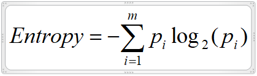
• Information Gain: pengurangan entropy disebabkan oleh partisi berdasarkan suatu atribut.
Semakin besar info gain = atribut itu semakin membuat homogen = semakin bagus
Idenya : pilih atribut dengan info gain yg paling besar.
Gain Information
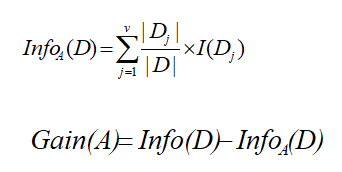
Gain(A) seberapa besar entropy berkurang akibat atribut A. Makin besar makin bagus.
Contoh Implementasi Decision Tree atau Pohon Keputusan pada Data Buys Computer
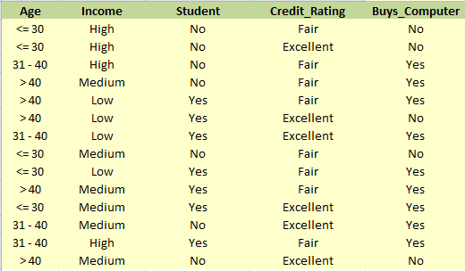
Entrophy untuk dua kelas : positif (+) dan negatif (-)
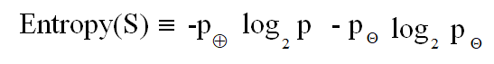
Perhitungan Entropy pada setiap data :


Contoh Pemilihan Atribut
•Class P: buys_computer = “yes”
•Class N: buys_computer = “no”
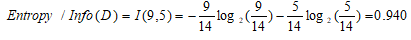
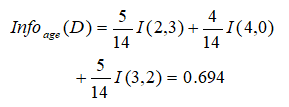
Berarti ada 5 dari 14 “age <=30” dgn 2 Yes dan 3 No.
Gain (Age) = Info(D) – Info age (D)
=0.940 – 0.694 = 0.246
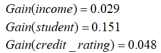
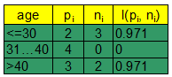
Setelah pemilihan atribut Age maka pilih atribut selanjutnya :
Gain (Age) = 0.246 yang terbesar, dipilih
Gain (income)=0.029
Gain(student)=0.151
Gain(credit_rating) =0.048
Setelah AGE, atribut apa selanjutnya?
Diproses untuk setiap cabang selama masih ada > 1 kelas
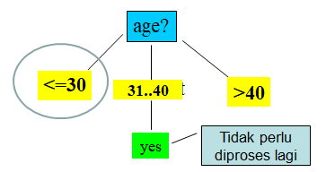
Selanjutnya... proses data yang <=30
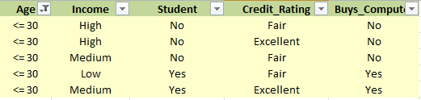
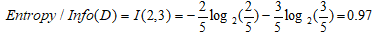
Gain(age) tidak perlu dihitung lagi, hitung gain(student), gain(credit_rating).
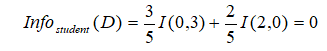
Gain (student) = Info(D) – Infostudent(D)
= 0.97 – 0
= 0.97
hitung gain(credit_rating)
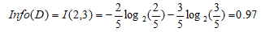
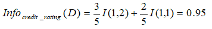
Gain (credit_rating) = Info(D) – Infostudent(D)
= 0.97 – 0.95
= 0.02
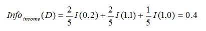
Bandingkan semua gain, ambil yang paling besar
Gain (studet) = 0.97
Gain (credit_rating = 0.02
Gain (income) = 0.4
Paling Besar Yaitu ; Student
Maka diperoleh hasil Decision Tree atau Poho keputusan seperti dibawah ini:
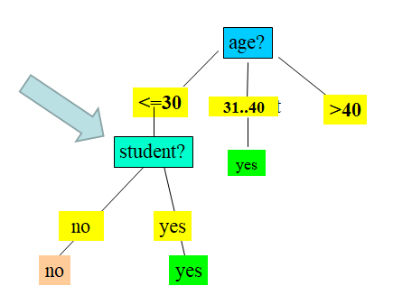